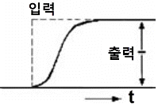

가스산업기사 (2011-06-12 기출문제)
1과목: 연소공학
1. 완전가스의 성질에 대한 설명으로 틀린 것은?
- 보일-샤를의 법칙을 만족한다.
- 아보가드로의 법칙에 따른다.
- 비열비는 온도에 의존한다.
- 기체의 분자력과 크기는 무시된다.
(정답률: 78%)

2. 물의 비열 1, 수증기의 비열 0.45, 100℃에서의 증발 잠열이 539㎉/㎏일 때 110℃ 수증기의 엔탈피는? (단, 기준 상태는 0℃, 1atm의 물이며 비열의 단위는 ㎉/㎏·℃이다.)
- 539㎉/㎏
- 639㎉/㎏
- 643.5㎉/㎏
- 653.5㎉/㎏
(정답률: 61%)
3. 메탄 60v%, 에탄 20v%, 프로판 15v%, 부탄 5v%인 혼합가스의 공기 중 폭발하한계(v%)는 약 얼마인가? (단, 각 성분의 폭발하한계는 메탄 5.0v%, 에탄 3.0v%, 프로판 2.1v%, 부탄 1.8v% 로 한다.)
- 2.5
- 3.0
- 3.5
- 4.0
(정답률: 79%)
4. 압력 1atm, 온도 20℃에서 공기 1㎏의 부피는 약 몇 m3인가? (단, 공기의 평균분자량은 29이다.)
- 0.42
- 0.62
- 0.75
- 0.83
(정답률: 61%)
5. 다음 중 폭굉(detonation)의 화염전파속도는?
- 0.1~10m/s
- 10~100m/s
- 1000~3500m/s
- 5000~10000m/s
(정답률: 91%)
6. CO2max[%]는 어느 때의 값을 말하는가?
- 실제공기량으로 연소시켰을 때
- 이론공기량으로 연소시켰을 때
- 과잉공기량으로 연소시켰을 때
- 부족공기량으로 연소시켰을 때
(정답률: 92%)
7. 다음 연료 중 착화온도가 가장 낮은 것은?
- 벙커 C유
- 목재
- 무연탄
- 탄소
(정답률: 84%)
8. 95℃의 온수를 100㎏/h 발생시키는 온수 보일러가 있다. 이 보일러에서 저위발열량이 45MJ/Nm3인 LNG를 1m3/h 소비할 때 열효율은 얼마인가? (단, 급수의 온도는 25℃이고, 물의 비열은 4.184kJ/㎏·K이다.)
- 60.07%
- 65.08%
- 70.09%
- 75.10%
(정답률: 70%)
9. 층류 연소속도 측정법 중 단위화염 면적 당 단위시간에 소비되는 미연소 혼합기체의 체적을 연소속도로 정의하여 결정하며, 오차가 크지만 연소속도가 큰 혼합기체에 편리하게 이용되는 측정 방법은?
- Slot 버너법
- Bunsen 버너법
- 평면 화염 버너법
- Soap Bubble법
(정답률: 87%)
10. 다음 연료 중 고위발열량과 저위발열량이 같은 것은?
- 일산화탄소
- 메탄
- 프로판
- 석유
(정답률: 67%)
11. 다음 연소반응식 중 불완전연소에 해당하는 것은?
- S＋O2 → SO2
- 2H2＋O2 → 2H2O
- CH4＋5/2O2 → CO＋2H2O＋O2
- C＋O2 → CO2
(정답률: 83%)
12. 증기운 폭발(UVCE)의 특징에 대한 설명으로 옳은 것은?
- 증기운의 크기가 커지면 점화 확률도 커진다.
- 증기운의 재해는 화재보다 폭발이 보통이다.
- 폭발효율은 BLEVE 보다 크다.
- 증기와 공기와의 난류혼합은 폭발의 충격을 감소시킨다.
(정답률: 75%)
13. 저발열량이 46MJ/㎏인 연료 1㎏을 완전연소시켰을 때 연소가스의 평균 정압비열이 1.3kJ/㎏·K 이고, 연소가스량은 22㎏이 되었다. 연소전의 온도가 25℃ 이었을 때 단열 화염온도는 약 몇 ℃인가?
- 1341
- 1608
- 1633
- 1728
(정답률: 49%)
14. 상온, 상압하에서 프로판이 공기와 혼합하는 경우 폭발범위는 약 몇 %인가?
- 1.9~8.5
- 2.2~9.5
- 5.3~14
- 4.0~75
(정답률: 87%)
15. 다음 중 이상연소 현상인 리프팅(Lifting)의 원인이 아닌 것은?
- 버너 내의 압력이 높아져 가스가 과다 유출할 경우
- 가스압이 이상 저하한다든지 노즐과 콕크 등이 막혀 가스량이 극히 적게 될 경우
- 공기조절장치(damper)를 너무 많이 열었을 경우
- 버너가 낡고 염공이 막혀 염공의 유효면적이 적어져 버너 내압이 높게 되어 분출속도가 빠르게 되는 경우
(정답률: 79%)
16. 불완전연소에 의한 매연, 먼지 등을 제거하는 집진 장치 중 건식 집진장치가 아닌 것은?
- 백필터
- 사이클론
- 멀티클론
- 사이클론 스크러버
(정답률: 75%)
17. 점화원이 될 우려가 있는 부분을 용기 안에 넣고 불활성가스를 용기 안에 채워 넣어 폭발성가스가 침입 하는 것을 방지하는 방폭구조는?
- 압력방폭구조
- 안전증방폭구조
- 유입방폭구조
- 본질방폭구조
(정답률: 84%)
18. 가스의 반응속도에 대한 설명으로 틀린 것은?
- 반응속도상수는 온도와 관계가 없다.
- 반응속도상수는 아레니우스법칙으로 표시할 수 있다.
- 반응은 원자나 분자의 충돌에 의해 이루어진다.
- 반응속도에 영향을 미치는 요인에는 온도, 압력, 농도 등이 있다.
(정답률: 83%)
19. 다음 중 열역학 제2법칙에 대한 설명이 아닌 것은?
- 열은 스스로 저온체에서 고온체로 이동할 수 없다.
- 효율이 100%인 열기관을 제작하는 것은 불가능 하다.
- 자연계에 아무런 변화도 남기지 않고 어느 열원의 열을 계속해서 일로 바꿀 수 없다.
- 에너지의 한 형태인 열과 일은 본질적으로 서로 같고, 열은 일로, 일은 열로 서로 전환이 가능하며, 이 때 열과 일 사이의 변환에는 일정한 비례 관계가 성립한다.
(정답률: 86%)
20. 다음 가연물과 일반적인 연소형태를 짝지어 놓은 것 중 틀린 것은?
- 니트로글리세린-확산연소
- 코크스-표면연소
- 등유-증발연소
- 목재-분해연소
(정답률: 88%)
2과목: 가스설비
21. 왕복동식 압축기의 특징에 대한 설명으로 틀린 것은?
- 압축효율이 높다.
- 용량조절이 쉽다.
- 설치면적이 크다.
- 저압용으로 적합하다.
(정답률: 73%)
22. 단면적이 300mm2인 봉을 매달고 600㎏의 추를 그 자유단에 달았더니 이 봉에 생긴 응력은 재료의 허용인장응력에 도달하였다. 이 봉의 인장강도가 400 ㎏/cm2이라면 안전율은 얼마인가?
- 1
- 2
- 3
- 4
(정답률: 82%)
23. 보일러, 난방기, 가스렌지 등에 사용되는 과열방지장치의 검지부 방식에 해당되지 않는 것은?
- 바이메탈식
- 액체팽창식
- 퓨즈메탈식
- 전극식
(정답률: 66%)
24. 기화기에 의해 기화된 LPG에 공기를 혼합하는 목적으로 가장 거리가 먼 것은?
- 발열량 조절
- 재액화 방지
- 압력 조절
- 연소효율 증대
(정답률: 70%)
25. 정압기의 유량특성에서 메인밸브의 열림(스토로그리프트)과 유량의 관계를 말하는 유량특성에 해당 되지 않는 것은?
- 직선형
- 2차형
- 3차형
- 평방근형
(정답률: 83%)
26. 볼탱크에 저장된 액화프로판(C3H8)을 시간당 50㎏씩 기체로 공급하려고 증발기에 전열기를 설치했을 때 필요한 전열기의 용량은 몇 kW인가? (단, 프로판의 증발열은 3740㎈/g㏖, 온도변화는 무시하고. 1㎈는 1.163×10 -6 kW이다.)
- 0.217
- 2.17
- 0.494
- 4.94
(정답률: 40%)
27. 압축기에서 압축비가 커지면 발생하는 현상으로 틀린 것은?
- 소요 동력이 증가한다.
- 실린더 내의 온도가 상승한다.
- 토출 가스의 양이 증가한다.
- 체적 효율이 저하한다.
(정답률: 50%)
28. 나사펌프의 특징에 대한 설명으로 틀린 것은?
- 고점도액의 이송에 적합하다.
- 고압에 적합하다.
- 흡입양정이 크고 소음이 적다.
- 구조가 간단하고 청소, 분해가 용이하다.
(정답률: 70%)
29. 갈바니 부식에 대한 설명으로 틀린 것은?
- 이종금속 접촉부식이라고도 한다.
- 전위가 낮은 금속표면에서 방식이 된다.
- 전위가 낮은 금속표면에서 양극반응이 진행된다.
- 두 종류의 금속이 접촉에 의해서 일어나는 부식이다.
(정답률: 64%)
30. 압력조정기의 다이어프램에 사용하는 고무의 재료는 전체 배합성분 중 NBR의 성분의 함량이 몇 % 이상 이어야 하는가?
- 50%
- 85%
- 90%
- 99%
(정답률: 60%)
31. 다음 중 터보형 펌프에 속하지 않는 것은?
- 센트리퓨걸 펌프
- 사류 펌프
- 축류 펌프
- 플런저 펌프
(정답률: 75%)
32. 배관의 규격기호와 그 용도 및 사용조건에 대한 설명으로 틀린 것은?
- SPPS는 350℃ 이하의 온도에서, 압력 9.8N/mm2 이하에 사용한다.
- SPPH는 350℃ 이하의 온도에서, 압력 9.8N/mm2 이하에 사용한다.
- SPLT는 빙점 이하의 특히 낮은 온도의 배관에 사용한다.
- SPPW는 정수두 100m 이하의 급수배관에 사용한 다.
(정답률: 84%)
33. 다음 중 신축이음의 종류가 아닌 것은?
- 루프형
- 슬리브형
- 스위블형
- 플랜지형
(정답률: 81%)
34. 탄소강에 각종 원소를 첨가하면 특수한 성질을 가진다. 다음 중 각 원소의 영향을 바르게 연결한 것은?
- Ni-내마멸성 및 내식성 증가
- Cr-인성 및 저온충격저항 증가
- Mo-고온에서 인장강도 및 경도 증가
- CU-전자기성 및 경화능력 증가
(정답률: 74%)
35. 도시가스 배관에 대한 설명으로 옳지 않은 것은?
- 폭 8m 이상의 도로에는 1.2m 이상 매설한다.
- 배관 접합은 원칙적으로 용접에 의한다.
- 지하매설 배관 재료는 주철관으로 한다.
- 지상배관의 표면 색상은 황색으로 한다.
(정답률: 71%)
36. 레이놀드(Reynolds)식 정압기의 특징인 것은?
- 로딩형이다.
- 콤팩트하다.
- 정특성, 동특성이 양호하다.
- 정특성은 극히 좋으나 안정성이 부족하다.
(정답률: 83%)
37. 국내에서 주로 사용되는 저장탱크에서 초저온의 LNG와 직접 접촉하는 내부 바닥 및 벽체에 주로 사용되는 재료는?
- 멤브레인
- 합금주철
- 탄소강
- 알루미늄
(정답률: 75%)
38. 20℃, 120atm의 산소 100㎏이 들어 있는 용기의 내용적은 약 몇 m3인가? (단, 산소의 가스정수는 26.5 로 한다.)
- 0.34
- 0.52
- 0.63
- 0.77
(정답률: 55%)
39. 직경이 각각 4m와 8m인 2개의 액화석유가스 저장탱크가 인접해 있을 경우 두 저장 탱크 간에 유지하여야 할 거리는 몇 m 이상인가?
- 1m
- 2m
- 3m
- 4m
(정답률: 79%)
40. 공기액화분리장치에서 탄산가스를 제거하기 위한 물질은?
- 실리카겔
- 염화칼슘
- 활성알루미나
- 수산화나트륨
(정답률: 73%)
3과목: 가스안전관리
41. 차량에 고정된 탱크에 의하여 가연성 가스를 운반할 때 비치하여야 할 소화기의 종류와 최소 수량은? (단, 소화기의 능력단위는 고려하지 않는다.)
- 분말소화기 1개
- 분말소화기 2개
- 포말소화기 1개
- 포말소화기 2개
(정답률: 90%)
42. 용기 및 특정설비의 재검사기간의 기준으로 옳은 것은?
- 제조된 지 16년이 경과된 47ℓ용접용기는 2년 마다 재검사를 받아야 한다.
- 용기에 부착되지 아니한 용기부속품은 3년 마다 재검사를 받아야 한다.
- 1993년에 신규검사를 받은 600ℓ복합재료용기는 3년 마다 재검사를 받아야 한다.
- 제조된 지 20년이 경과된 차량에 고정된 탱크는 2년 마다 재검사를 받아야 한다.
(정답률: 61%)
43. 고압가스 충전용기의 운반기준으로 틀린 것은?
- 가연성가스 또는 산소를 운반하는 차량에는 소화 설비 및 재해발생방지를 위한 응급조치에 필요한 자재 및 공구 등을 휴대할 것
- 염소와 아세틸렌, 암모니아 또는 수소는 동일 차량에 적재하여 운반하지 아니할 것
- 가연성가스와 산소를 동일 차량에 적재하여 운반하는 때에는 그 충전용기와 밸브가 마주보도록 할 것
- 충전용기와 소방기본법이 정하는 위험물과는 동일 차량에 적재하여 운반하지 아니할 것
(정답률: 91%)
44. 고압가스 저장에 대한 기술 기준으로 틀린 것은?
- 충전용기는 항상 40℃ 이하의 온도를 유지할 것
- 가연성가스를 저장하는 곳에 방폭용 휴대용 손전등 외의 등화를 휴대하지 아니할 것
- 산화에틸렌의 저장탱크에는 45℃에서 그 내부가스의 압력이 0.4㎫ 이상이 되도록 탄산가스를 충전할 것
- 시안화수소의 저장은 용기에 충전한 후 90일을 초과하지 아니할 것
(정답률: 88%)
45. 방폭전기 기기의 구조별 표시방법으로 옳은 것은?
- 내암밤폭구조 : P
- 유입방폭구조 : a
- 안전증 방폭구조 : e
- 본질안전 방폭구조 : ba
(정답률: 83%)
46. 1일 처리능력이 60000m3인 가연성가스 저온저장탱크와 제2종 보호시설과의 안전거리의 기준은?
- 20.0m
- 21.2m
- 22.0m
- 30.0m
(정답률: 72%)
47. 가스보일러의 안전장치에 해당하지 않는 것은?
- 소화안전장치
- 과충전방지장치
- 과열방지장치
- 저가스압차단장치
(정답률: 60%)
48. 아세틸렌의 성질에 대한 설명으로 옳은 것은?
- 고체 아세틸렌보다 액체 아세틸렌이 안정하다.
- 흡열화합물이므로 압축하면 분해폭발을 일으킨다.
- 융점(-81℃)과 비점(-84°C)이 비슷하여 승화하지 않고 융해한다.
- 15℃ 상태에서 물에는 용해되지 않고, 아세톤 1 ℓ에 약 25배가 용해된다.
(정답률: 65%)
49. 내용적 50ℓ의 LPG 용기에 프로판을 충전할 때 최대 충전량은 몇 ㎏인가? (단, 프로판의 충전정수는 2.35이다.)
- 19.15
- 21.28
- 32.62
- 117.5
(정답률: 80%)
50. 차량에 고정된 탱크의 충전시설에서 가연성가스 충전시설의 고압가스설비는 그 외면으로부터 다른 가연성가스 충전시설의 고압가스설비와 안전거리 이상을 유지하도록 하고 있다. 그 거리는 몇 m 이상 이어야 하는가?
- 2m
- 3m
- 5m
- 7m
(정답률: 63%)
51. 다음 중 휴대용 부탄가스렌지의 올바른 사용방법은?
- 바람의 영향을 줄이기 위해서 텐트 안에서 사용 한다.
- 효율을 높이기 위해서 두 대를 나란히 연결하여 사용한다.
- 사용하는 그릇은 렌지의 삼발이보다 폭이 좁은 것을 사용한다.
- 렌지를 운반 중에는 용기를 렌지 내부에 안전하게 보관한다.
(정답률: 90%)
52. 고압가스 특정제조시설에 설치되는 가스누출 검지경보장치의 설치기준에 대한 설명으로 옳은 것은?
- 경보농도는 가연성가스의 경우 폭발한계의 1/2 이하로 하여야 한다.
- 검지에서 발신까지 걸리는 시간은 경보농도의 1.2배 농도에서 보통 20초 이내로 한다.
- 경보기의 정밀도는 경보농도 설정치에 대하여 가연성 가스용은 ±25% 이하이어야 한다.
- 검지경보장치의 경보정밀도는 전원의 전압 등 변동이 ±20% 정도일 때에도 저하되지 아니하여야 한다.
(정답률: 73%)
53. 액화염소 142g을 기화시키면 표준상태에서 몇 ℓ의 기체염소가 되는가? (단, 염소의 원자량은 35.5이다.)
- 22.4
- 44.8
- 67.2
- 89.6
(정답률: 65%)
54. 정전기제거 또는 발생방지 조치에 대한 설명으로 틀린 것은?
- 대상물을 접지시킨다.
- 상대습도를 높인다.
- 공기를 이온화시킨다.
- 전기저항을 증가시킨다.
(정답률: 82%)
55. 프레온냉매가 실수로 눈에 들어갔을 경우 눈 세척에 주로 사용하는 약품으로 적당한 것은?
- 바셀린
- 희붕산용액
- 농피크린산용액
- 유동파라핀
(정답률: 76%)
56. 고압가스용기, 특정설비 등은 수리자격자별로 수리 범위가 제한되어 있다. 다음 중 수리자격자별 수리 범위로 틀린 것은?
- 저장능력 50톤의 액화석유가스용 저장탱크 제조자는 해당 제품의 부속품 교체 및 가공이 가능하며, 필요 한 경우 단열재를 교체할 수 있다.
- 액화산소용 초저온용기 제조자는 해당 용기에 부착되는 용기부속품을 탈·부착 할 수 있으며 용기몸체의 용접도 가능하다.
- 열처리설비를 갖춘 용기 전문검사기관에서는 LPG용기의 프로텍터, 스커트 교체가 가능하다.
- 저장능력이 50톤인 석유정제업자의 석유정제시 설에서 고압가스를 제조하는 자는 해당 저장시설의 단열재 교체가 가능하다.
(정답률: 58%)
57. 차량에 고정된 탱크로 고압가스를 운반하는 차량의 운반기준으로 적합하지 않는 것은?
- 후부취출식 외의 저장탱크는 저장탱크 후면과 차량 뒷범퍼와의 수평거리가 20cm 이상 유지하여야 한다.
- 액화가스 중 가연성가스, 독성가스 또는 산소가 충전된 탱크에는 손상되지 아니하는 재료로 된 액면계를 사용한다.
- 액화가스를 충전하는 탱크에는 그 내부에 방파판을 설치한다.
- 2개 이상의 탱크를 동일한 차량에 고정하여 운반 하는 경우에는 탱크마다 탱크의 주밸브를 설치한 다.
(정답률: 77%)
58. 일반도시가스 정압기실 경계책의 설치기준에 대한 설명으로 틀린 것은?
- 높이 1.5m 이상의 철책 또는 철망으로 경계책을 설치한다.
- 경계책 주위에는 외부사람의 무단출입을 금하는 내용의 경계표지를 부착(설치)한다 .
- 철근콘크리트로 지상에서 6m 이상의 높이에 설치된 정압기는 경계책을 설치한다.
- 도로의 지하에 설치되어 사람 또는 차량통행에 지장을 주는 정압기는 경계표지를 설치하고 경계책 설치를 생략한다.
(정답률: 60%)
59. 고압가스 제조, 저장, 판매, 수입 시 독성가스 배관용 밸브의 검사대상에 해당되지 않는 것은?
- 볼밸브
- 글로브밸브
- 콕
- 앵글밸브
(정답률: 55%)
60. 최고사용압력이 고압인 가스혼합기, 가스정제설비, 배송기, 압송기 그 밖에 공급시설의 부대설비는 그 외면으로부터 사업장의 경계까지 얼마 이상의 거리를 유지하여야 하는가?(오류 신고가 접수된 문제입니다. 반드시 정답과 해설을 확인하시기 바랍니다.)
- 3m
- 10m
- 20m
- 30m
(정답률: 58%)
4과목: 가스계측
61. 실제 길이가 3.0cm 인 물체를 측정하여 2.95cm를 얻었다. 이때 오차는 얼마인가?
- ＋0.⑤cm
- -0.⑤cm
- ＋1.67%
- -1.67%
(정답률: 73%)
62. 가스분석계 중 화학반응을 이용한 측정 방법은?
- 연소열법
- 열전도율법
- 적외선흡수법
- 가시광선분산법
(정답률: 79%)
63. 액위(level)측정 계측기기의 종류 중 액체용 탱크에 많이 사용되는 사이트글라스(Sight Glass)의 단점에 해당하지 않는 것은?
- 측정범위가 넓은 곳에서 사용이 곤란하다.
- 동결방지를 위한 보호가 필요하다.
- 파손되기 쉬우므로 보호대책이 필요하다.
- 내부설치 시 요동(Turbulance)방지를 위해 Stilling Chamber 설치가 필요하다.
(정답률: 77%)
64. 프로세스계 내에 시간지연이 크거나 외란이 심할 경우 조절계를 이용하여 설정점을 작동시키게 하는 제어방식은?
- sequence 제어
- cascade 제어
- program 제어
- feed back 제어
(정답률: 65%)
65. 어떤 비례 제어기가 50℃에서 100℃사이에 온도를 조절 하는데 사용되고 있다. 만일 이 제어기기가 측정한 온도가 84℃에서 90℃일 때 비례대(Propotional band)는 약 얼마인가?
- 10%
- 11%
- 12%
- 13%
(정답률: 73%)
66. 막식 가스미터에서 이물질로 인한 불량이 생기는 원인으로 가장 거리가 먼 것은?
- 크랭크축에 이물질이 들어가 회전부에 윤활유가 없어진 경우
- 밸브와 시트 사이에 점성물질이 부착된 경우
- 연동기구가 변형된 경우
- 계량기의 유리가 파손된 경우
(정답률: 80%)
67. 유황분 정량 시 표준용액으로 적절한 것은?
- 수산화나트륨
- 과산화수소
- 초산
- 요오드칼륨
(정답률: 73%)
68. 가스크로마토그래피의 주요 구성 요소가 아닌 것은?
- 분리관(컬럼)
- 검출기
- 기록계
- 흡수액
(정답률: 66%)
69. 다음 중 포스겐가스의 검지에 사용되는 시험지는?
- 리트머스 시험지
- 하리슨 시험지
- 연당지
- 영화제일구리 착염지
(정답률: 84%)
70. 스템(step)과 응답이 그림처럼 표시되는 요소를 무엇 이라 하는가?

- 일차지연요소
- 낭비시간요소
- 적분요소
- 고차지연요소
(정답률: 69%)
71. 도시가스 사용시설에 대하여 실시하는 내압시험에서 내압시험을 공기 등의 기체로 하는 경우 압력을 일시에 시험압력까지 올리지 아니하여야 한다. 이에 대한 설명으로 옳은 것은?
- 먼저 상용압력의 50%까지 승압하고, 그 후에는 상용압력의 10%씩 단계적으로 승압한다.
- 먼저 상용압력의 50%까지 승압하고, 그 후에는 상용압력의 20%씩 단계적으로 승압한다.
- 먼저 상용압력의 80%까지 승압하고, 그 후에는 상용압력의 10%씩 단계적으로 승압한다.
- 먼저 상용압력의 80%까지 승압하고, 그 후에는 상용압력의 20%씩 단계적으로 승압한다.
(정답률: 69%)
72. H2와 O2 등에는 감응이 없고, 탄화수소에 대한 감응이 가장 좋은 검출기는?
- 열전도도(TCD) 검출기
- 불꽃이온화(FID) 검출기
- 전자포획(ECD) 검출기
- 열이온(TID) 검출기
(정답률: 79%)
73. 전자유랑계는 다음 중 어느 법칙을 이용한 것인가?
- 쿨롱의 전자유도법
- 오옴의 전자유도법칙
- 패러데이의 전자유도법칙
- 주울의 전자유도법칙
(정답률: 92%)
74. 산소(O2) 중에 포함되어있는 질소(N2) 성분을 가스 크로마토그래피로 정량하고자 한다. 다음 방법 중 옳지 않은 것은?
- 열전도도검출기(TCD)를 사용한다.
- 산소(O2)의 피크가 질소(N2)의 피크보다 먼저 나오도록 컬럼을 선택한다.
- 캐리어가스로는 헬륨을 쓰는 것이 바람직하다.
- 산소제거트랩(Oxygen trap)을 사용하는 것이 좋다.
(정답률: 81%)
75. 오리피스로 유량을 측정하는 경우 압력차가 4배로 증가 하면 유량은 몇 배로 변하는가?
- 2배 증가
- 4배 증가
- 8배 증가
- 16배 증가
(정답률: 77%)
76. 다음 중 탄성식 압력계가 아닌 것은?
- 벨로우즈식 압력계
- 다이어프램식 압력계
- 부르동관 압력계
- 링밸런스식 압력계
(정답률: 70%)
77. 다음 중 대수용가(100~5000m3/h)에 적당한 가스미터는?
- 막식 가스미터
- 습식 가스미터
- 건식 가스미터
- 루트식 가스미터
(정답률: 81%)
78. 다이어프램 압력계의 특징에 해당되지 않는 것은?
- 미소한 압력을 측정하기 위한 압력계이다.
- 부식성 유체의 측정이 가능하다.
- 과잉압력으로 파손되면 그 위험성은 커진다.
- 감도가 높고 응답성이 좋다.
(정답률: 48%)
79. 측정기의 감도에 대한 일반적인 설명으로 옳은 것은?
- 감도가 좋으면 측정시간이 짧아진다.
- 감도가 좋으면 측정범위가 넓어진다.
- 감도가 좋으면 아주 작은 양의 변화를 측정할 수 있다.
- 측정량의 변화를 지시량의 변화로 나누어 준 값이다.
(정답률: 70%)
80. 다음 중 습식 가스미터의 형태는?
- 루트형
- 오벌형
- 피스톤 로터리형
- 드럼형
(정답률: 58%)
완전가스는 보일-샤를의 법칙과 아보가드로의 법칙에 따르며, 비열비는 온도에 의존합니다. 하지만 기체의 분자력과 크기는 무시할 수 없는 요소 중 하나입니다. 기체 분자 간의 상호작용이나 분자 크기가 큰 경우에는 완전가스의 성질이 다르게 나타날 수 있습니다.